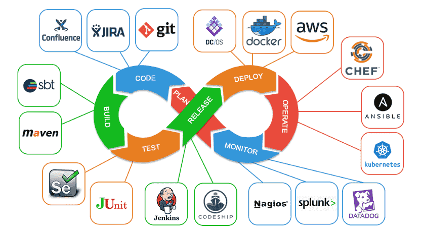
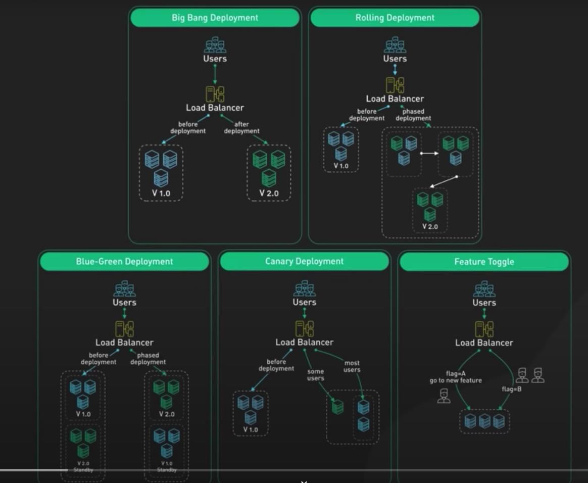
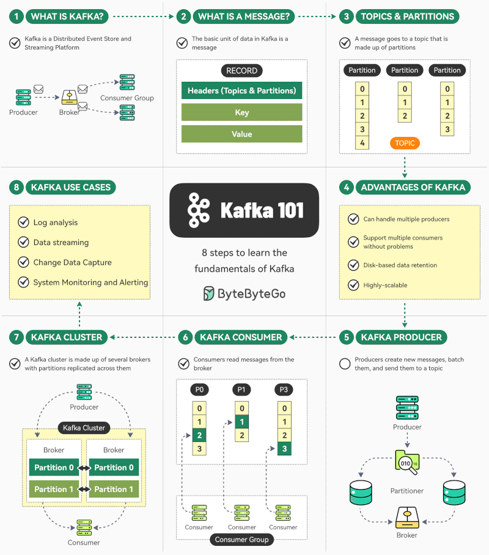
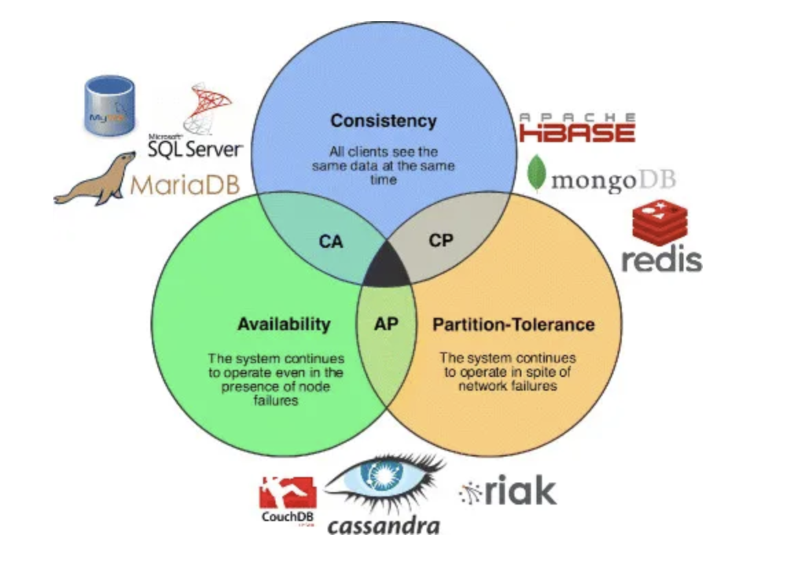
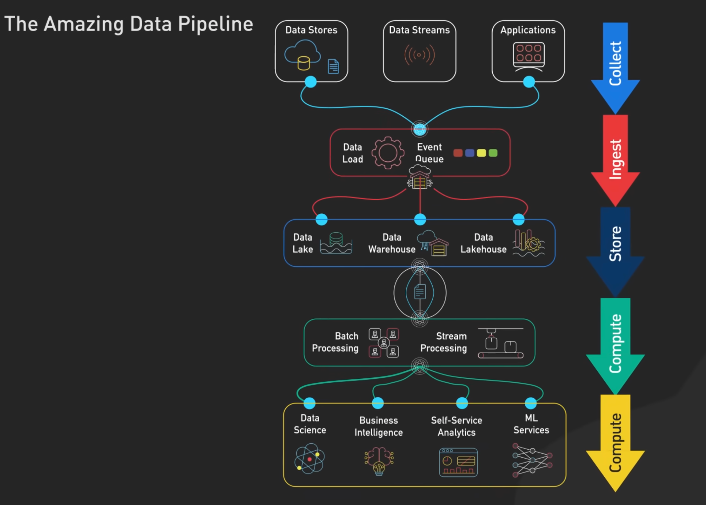
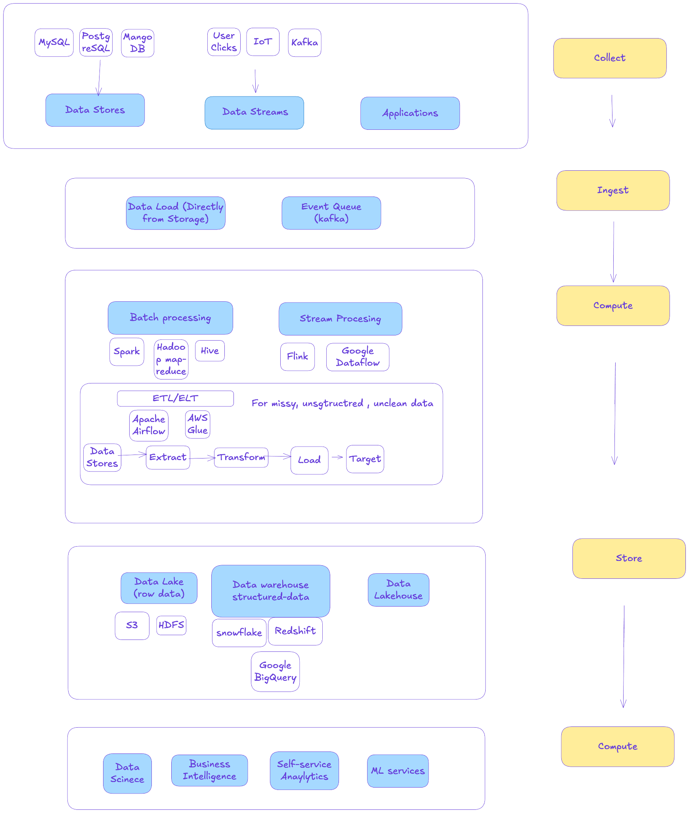
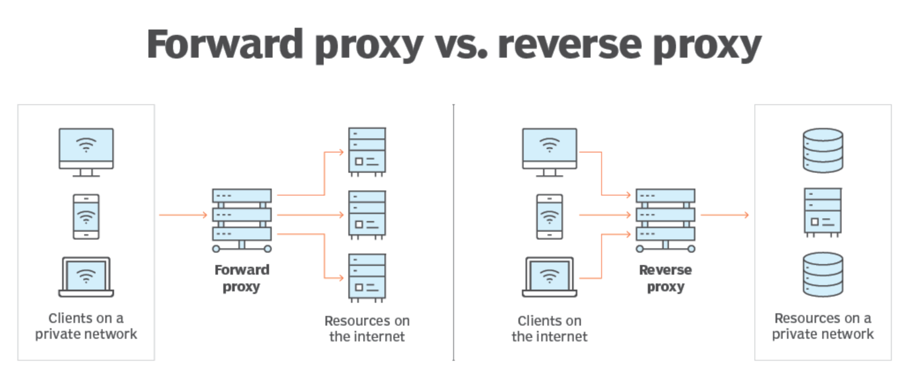
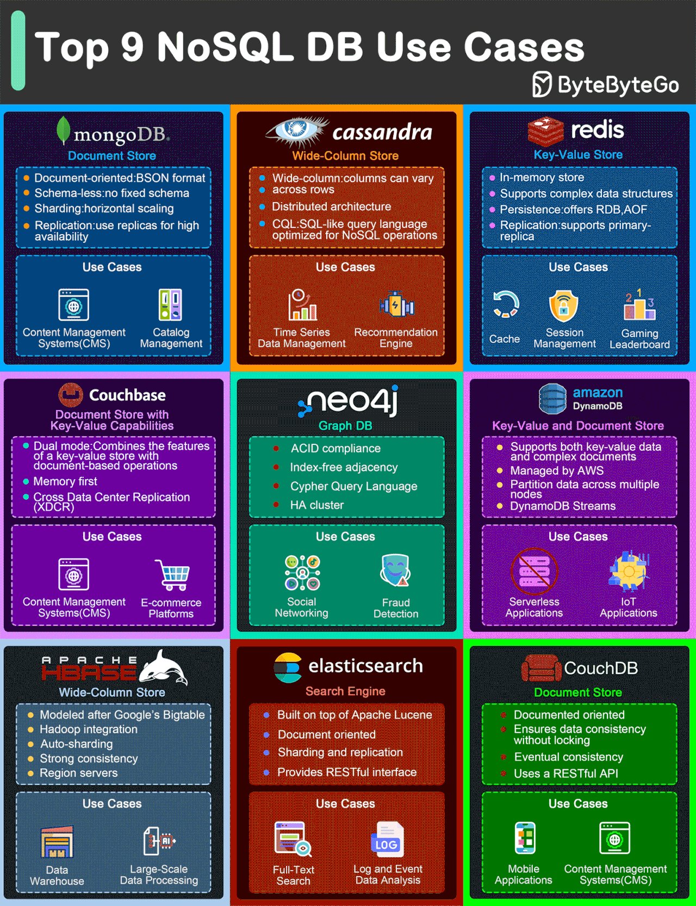

System Design Prep Hub
A living reference for system design interview prep — built from my own notes. Use the sidebar to jump to a topic, tick off the roadmap as you actually re-cover it, and treat the cheat sheet as the numbers to have memorized cold before any interview.
Prep roadmap & checklist
Progress is saved in this browser only (localStorage) — nothing is sent anywhere.
1. Foundations — read / watch first
2. Practice problems — Book V1
3. Practice problems — Book V2
4. Real interview problems (previous companies)
5. "How X Works" — LinkedIn post
Numbers & cheat sheet
The back-of-the-envelope numbers to have memorized before any estimation question.
Geohash length → grid size
| GeoHash length | Grid area (width × height) |
|---|---|
| 1 | ≤ 5,000 km × 5,000 km |
| 2 | ≤ 1,250 km × 625 km |
| 3 | ≤ 156 km × 156 km |
| 4 | ≤ 39.1 km × 19.5 km — most used in interviews |
| 5 | ≤ 4.89 km × 4.89 km — most used in interviews |
| 6 | ≤ 1.22 km × 0.61 km — most used in interviews |
| 7 | ≤ 153 m × 153 m |
| 8 | ≤ 38.2 m × 19.1 m |
| 9 | ≤ 4.77 m × 4.77 m |
| 10 | ≤ 1.19 m × 0.596 m |
| 11 | ≤ 149 mm × 149 mm |
| 12 | ≤ 37.2 mm × 18.6 mm |
Map tile / zoom-level math
- One tile = 256×256 px, covers roughly 200m × 200m, ~100 KB compressed.
- For 1 km² you need ~25 tiles → ~2.5 MB / km².
- 21 zoom levels total. Deepest zoom level (21) has 4.4 trillion tiles.
- Level 21 raw size: 4.4T × 100 KB ≈ 440 PB. ~90% of tiles are unused (ocean, uninhabited) → ~44 PB effective, rounded to ~50 PB.
- Each shallower level shrinks 4× → total for all pre-computed levels: 50 + 50/4 + 50/16 + … ≈ 67 PB, rounded to ~100 PB to store the whole world at all zoom levels.
- Typical target: ~1 million QPS.
| Zoom level | # tiles |
|---|---|
| 0 | 1 |
| 1 | 4 |
| 2 | 16 |
| 3 | 64 |
| 4 | 256 |
| 5 | 1,024 |
| 6 | 4,096 |
| 7 | 16,384 |
| 8 | 65,536 |
| 9 | 262,144 |
| 10 | 1,048,576 |
| 11 | 4,194,304 |
| 12 | 16,777,216 |
| 13 | 67,108,864 |
| 14 | 268,435,456 |
| 15 | 1,073,741,824 |
| 16 | 4,294,967,296 |
| 17 | 17,179,869,184 |
| 18 | 68,719,476,736 |
| 19 | 274,877,906,944 |
| 20 | 1,099,511,627,776 |
Latency, availability & sizing
Reading latency (1 MB)
Time units
Availability → downtime
Throughput rules of thumb
Byte scale
Character encoding
Field size estimates
Object size estimates
Rule: number of possible values for an n-bit ID = 2ⁿ → derive bytes needed from that.
Types of testing
- Smoke testing — checks that the most important functions of an application/system work. Often a preliminary test before more exhaustive testing.
- Integration testing (part of CI / CD) — checks that different components or systems work together correctly.
- Regression testing — checks that changes haven't introduced new bugs; re-runs previously passing tests.
- Unit testing — checks that individual units of code (functions/methods) work correctly, usually via automated test frameworks.
- A/B testing — different versions of the same service run simultaneously as experiments in the same environment, controlled via feature flags, dedicated A/B tools, or distinct deployments.

Deployment strategies

- Big Bang — deploy changes to the entire system at once. Rollback needed if issues arise; can cause downtime. Common for critical updates like database upgrades.
- Rolling — updates are applied incrementally: servers are taken down one at a time, updated, tested, and put back online before moving to the next. Rollback if issues occur.
- Canary — a new version first goes to a small subset of servers (~10%), closely monitored, then expands to 30%, 70%, and eventually 100%. Minimizes blast radius; often combined with rolling deployment.
- Blue-Green — two identical production environments ("blue" = active, "green" = idle). New version deploys to green and is tested while customers stay on blue; traffic switches once validated, and can revert instantly if issues arise.
- Feature Toggle — not a deployment strategy per se; controls specific features via on/off switches independent of deployment, and can be combined with any of the above.
Kafka

Multiple consumer groups
If topic T1 has message M1, and there are two consumer groups CG1 and CG2, both groups independently receive and process M1. The message stays in the topic until removed per the retention policy, regardless of either group's processing status.
Single consumer per partition within a group
Within one consumer group, only one consumer processes a message from a given partition at a time — so each message is handled exactly once within that group. Other consumers in the group work on different partitions.
How Kafka avoids duplicate processing
Topic → partitions → partitions replicated across brokers → brokers grouped into clusters.
- Partitioning — topics (e.g.
user-login, ordered log events) are split into partitions distributed (with replicas) across brokers. Each partition is an ordered, immutable sequence with sequential offsets starting at 0. - Consumer groups — consumers in the same group share responsibility for a topic's partitions; Kafka ensures each message in a partition goes to only one consumer within that group.
- Offset management — Kafka tracks, per consumer per partition, the offset of the last successfully processed message. Consumers periodically commit offsets as they process.
- Fault tolerance & rebalancing — consumers can join/leave dynamically; on restart or failover a consumer resumes from its last committed offset. Kafka rebalances partitions across the group automatically, ensuring exactly-once processing per group even through failures or scaling events.
Core concepts & definitions
CAP theorem source
- Consistency — every read receives the most recent write, or an error.
- Availability — every request receives a response, with no guarantee it's the most recent version.
- Partition tolerance — the system keeps operating despite arbitrary network partitioning.

Redis vs Memcached source
Both are server-side caching solutions. Redis is an in-memory (mostly non-volatile) data store; Memcached is a purely volatile in-memory cache limited to LRU eviction.
- Redis — non-volatile, supports lists/sets/TTL collections/different eviction policies; replicates data across regions; easy to scale horizontally; multi-region support.
- Memcached — fully volatile in memory; scales via vertical/parallel processing.
API Gateway vs Load Balancer source
In short: API Gateway ≈ Load Balancer + web server. Instead of just distributing requests evenly across backend servers like an LB, an API Gateway routes requests to specific resources based on the requested endpoint, and additionally handles authentication, rate limiting, service registry/discovery, and load balancing. It plays a central role in microservices architectures, mapping HTTP endpoints to backend services and routing each request on demand.
XMPP vs WebSocket
- XMPP — slower but more secure; can bridge to Jabber via gateways; decentralized, client-server model where clients never talk directly to each other.
- WebSocket — faster; weaker security (SSL, but attack-prone); unlimited open sessions per user per app; centralized architecture — establishes a socket connection directly between server and browser.
Data warehouse, Spark, Hadoop & friends
Data warehouse vs database · Hadoop vs Spark · ByteByteGo video
Decision tree — if X, use Y
- Need real-time processing (ms–seconds)? → Apache Flink
- Batch / offline processing, heavy transforms, ETL, ML? → Apache Spark
- SQL analytics, dashboards, BI? → Amazon Redshift
- Large-scale raw / historical storage? → Hadoop (HDFS) or S3
Rule of thumb: Streaming → Flink · Batch compute → Spark · Analytics SQL → Redshift · Storage → Hadoop/S3
Typical modern pipeline


- Amazon Redshift is OLAP — analyzes large historical datasets in batch, not real-time.
- Spark operates close to real-time: has a core library, ML, YARN, and Spark SQL modules; uses Resilient Distributed Datasets and processes data in memory. Yahoo and Alibaba have run it on 10,000+ node clusters processing hundreds of terabytes in batch. It streams events at millions/sec with low latency, managed via a Cluster Manager using a DAG (directed acyclic graph). Also used for ETL.
| Criteria | Apache Spark | Hadoop | Amazon Redshift |
|---|---|---|---|
| Processing type | In-memory, real-time & batch | Batch (disk-based) | Analytical queries (OLAP), ETL |
| Use case | Real-time analytics, ML | Large-scale batch processing | Data warehousing, BI |
| Scalability | Horizontally scalable | Horizontally scalable | Highly scalable (cloud) |
| Data storage | Distributed — HDFS or others | HDFS | Columnar, cloud (AWS S3) |
| Performance | Fast — in-memory | Slower — disk-based | Optimized for complex queries |
| Integration | Multiple data sources | Primarily HDFS-based | Deep AWS integration |
Conclusion: Spark for real-time analytics/ML/iterative processing · Hadoop for cost-effective large-scale disk-based batch · Redshift for OLAP and cloud-native warehousing.
JSON vs Protobuf
- JSON — expensive serialization; human-readable; extensible, not tied to a schema, self-contained; types can be unclear (e.g. can't natively express an unsigned 32-bit int).
- Protobuf — fixed, defined schema; fast serialization/deserialization; good for high volume. Message definitions live in
.protofiles and generate clients for many languages.
CDN source
A globally distributed network of proxy servers across multiple data centers, used to serve content with high availability and performance. It's typically a third-party network; many companies store static assets on a CDN. Content is replicated in many places so it's more likely to be close to the user (fewer hops, friendlier network path). CDNs also absorb scalability concerns — you just pay for the service.
Bloom filter source
A space-efficient structure for testing set membership, with possible false positives: it can tell you an element is definitely not in the set, or probably is. Implementation: an empty filter is an m-bit array (all 0), with k hash functions mapping each element to one of the m bits. Adding an element sets its k bits to 1. Checking membership: if any of the k bits is 0, the element definitely doesn't exist; if all are 1, it's a probable match (could be a collision from other elements). Classic use case: deduplicating URLs in a web crawler.
HTTP persistent connections
Also called HTTP keep-alive / connection reuse: a single TCP connection sends and receives multiple HTTP request/response pairs instead of opening a new connection per request. HTTP/2 extends this idea further, multiplexing multiple concurrent requests/responses over one connection.
Zookeeper source
A reliable distributed system manager — a distributed coordination service. Handles distributed configuration/cluster management (nodes joining/leaving) and distributed, synchronized locks.
Elasticsearch (reverse index service)
A search engine built on Apache Lucene. Provides a distributed, multitenant-capable full-text search engine with an HTTP web interface and schema-free JSON documents.
Proxy vs reverse proxy video

- Forward proxy — the server doesn't know who the client is (e.g. mobile device routed through a proxy). Hides client identity. Used for anonymity, caching, blocking unwanted sites, geo-fencing.
- Reverse proxy — the client doesn't know who the server is. Used for load balancing, caching, isolating internal traffic, logging.
SQL vs NoSQL source
| SQL | NoSQL | |
|---|---|---|
| Reasons to choose | Structured data · strict schema · relational data · complex joins needed · transactions · clear scaling patterns · mature ecosystem (devs, community, tools) · fast index lookups | Semi-structured data · dynamic/flexible schema · non-relational · no complex joins needed · storing many TB/PB · very data-intensive workloads · very high IOPS throughput |
| Good fit cases | — | Rapid ingest of clickstream/log data · leaderboard or scoring data · temporary data (shopping cart) · frequently-accessed ("hot") tables · metadata/lookup tables |

Consistent hashing 8-min video
- Hash both server names/IPs and data keys with the same hash function.
- To locate the server for key
K0(conceptuallyhash(K0) % num_servers), walk clockwise on the hash ring to the next available server. - To get more even server mapping and better partitioning, add virtual nodes that map to real servers.
Reliability playbook
Nine angles to cover whenever an interview asks "how do you make this reliable?"
1. Redundancy & replication
- Data replication — replicate across servers/data centers to avoid a single point of failure (e.g. master-slave or multi-master).
- Service redundancy — duplicate critical services (active-active or active-passive failover); e.g. multiple instances per microservice across availability zones.
2. Load balancing
- Distribute traffic — spread load across servers so no single node is overloaded and traffic reroutes if one fails.
- Health checks — load balancers should regularly check instance health and route around unhealthy ones.
Example: AWS ELB or Nginx handling traffic distribution and failover.
3. Automated recovery
- Auto-scaling — spin up new instances automatically under load or after failures.
- Self-healing systems — automatically restart or replace failed instances (e.g. Kubernetes pod rescheduling / replication controllers).
4. Data durability & backup
- Durable storage — e.g. Amazon S3, RAID-configured disks, to protect against hardware failure.
- Regular backups — automated, geographically distributed, with a disaster-recovery restore strategy.
5. Consistency & fault tolerance
- CAP theorem trade-offs — pick eventual vs strong consistency based on system requirements.
- Fault-tolerant design — consensus algorithms like Paxos or Raft to tolerate failures without losing data/availability.
Example: Cassandra/DynamoDB favor eventual consistency for availability, backed by consensus protocols for reliable replication.
6. Monitoring & alerting
- Monitoring systems — real-time visibility (Prometheus, Datadog) into latency, error rates, resource usage.
- Alerting — notify the right team fast (e.g. PagerDuty) to catch degradation early.
7. Graceful degradation
- Circuit breakers — trip and fail gracefully under strain to prevent cascading failures.
- Fallback strategies — serve cached data or read replicas when a dependency is down.
Example: Netflix uses circuit breakers to limit blast radius from failing dependencies.
8. Testing for reliability
- Chaos engineering — inject controlled failures (e.g. Netflix's Chaos Monkey) to find weaknesses proactively.
- Failover testing — regularly rehearse failover to confirm the system behaves as expected when a component goes down.
9. SLAs & SLOs
- Define Service Level Agreements/Objectives for uptime, availability, recovery time, and design to meet or beat them.
- Track error budgets to stay within acceptable failure rates.
Example: a 99.9% uptime SLA allows < ~43 minutes of downtime per month.
Appendix & resources
General prep & tools
- Technical coding & system design preparation doc
- Diagramming tools: Lucidchart · AWW App · Excalidraw · C4-PlantUML
- Personal GitHub algorithms repo — design patterns / data structures / Cracking the Coding Interview Ch.9
- Cracking the Coding Interview — Chapter 9: System Design and Scalability
- YouTube playlist 1 · YouTube playlist 2
- hellointerview.com